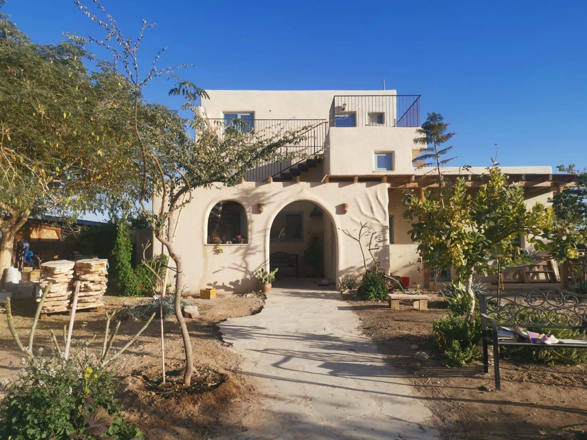
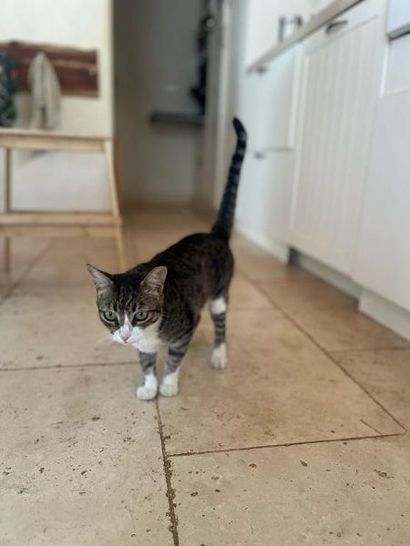
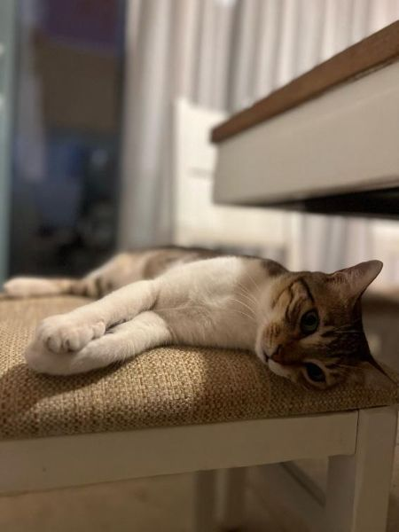

איך מגיעים
- נכנסים לצוקים ועוברים את שער הישוב הצהוב.
- עוברים את הכיכר הראשונה וממשיכים ישר עם הכביש. הכביש מטפס לצוק.
- בקצה העלייה יש כיכר שנייה. בה פונים ימינה.
- אנחנו הבית השלישי מצד ימין. הגעתם!
נעילה: כשתגיעו הבית יהיה פתוח. רוצים לנעול בלילה או כשאתם יוצאים לטייל? המפתח נמצא בארון התבלינים, במגירה הכי קרובה לדלת באי של המטבח.
נעילה: כשתגיעו הדלת תהיה פתוחה. רוצים לנעול בלילה או כשאתם יוצאים לטייל? המפתח נמצא בתוך הקערה הטיבטית שעל אדן החלון, בין המטבח לפינת האוכל.
חנייה: בחניה של הבית, זו עם הפרגולה.
חנייה: ברחוב, מול הבית.
בדרך: יש תחנת דלק בכניסה לישוב, אז אין צורך לתדלק קודם. פירות וירקות תמצאו אצלנו בשושקה. מוצרי חלב ובשר כדאי לקנות לפני, במעדניית Ruth 90 בכניסה לישוב, בסופר בעין יהב או במכולות של הישובים בדרך.

images/studio-entrance.jpg)איך הבית עובד
בנינו את הבית במו ידינו מהמפ (קנבוס תעשייתי עם סיד), כשהיינו הבית הרביעי בארץ שנבנה כך. הקירות "נושמים": הם מבודדים ומווסתים לחות, ותרגישו את זה ברגע שתיכנסו. הטיח טבעי, אין רעלים, וגם חומרי הניקוי אקולוגיים.
הקירור: מצנן מדברי, לא מזגן
התקנו שתי מערכות desert cooler: מאוורר גדול שזורק אוויר דרך "מטפחת" לחה. ביובש של הערבה זה מקרר בנעימות, לא מצנן אתכם, ולא צריך לסגור דלתות.
- משאירים דלוק כל הזמן. אם צריך עוד, מדליקים את מאווררי התקרה.
- בלילה לפעמים קריר ונעים להתכסות, אבל פוך לא תצטרכו.
- בימים לחים מאוד (נדיר, פעם או פעמיים בשנה) המצנן פחות עובד. לשם כך יש מזגן מרכזי באזור הציבורי, ואפשר לישון בסלון.
הבריכה
עומק 1.22 מ׳, פתוחה בעונה החמה. יש מצופים, תביאו בגדי ים, מגבות, כובע וקרם הגנה.
- שוטפים רגליים לפני שנכנסים (יש פיילה ליד).
- נכנסים רק בסולם. לא קופצים.
- ילדים בבריכה רק בהשגחה. כשאין השגחה, מוציאים את הסולם.
- השימוש באחריותכם. לא נכנסים עם תודעה מעורפלת.
המטבח
אנחנו משפחה שאוהבת לבשל, אז יש הכל: מכונת פסטה, מכונת גלידה, רביולי, מייבש מזון, תנור, גז, בלנדר, מיקסר, מעבד מזון ומכונת קפה.
- אין מיקרוגל. אנחנו מחממים על אש.
- אנחנו לא אוכלים בשר ועוף בבית. אם אתם כן, השתמשו בבקשה בכלי הזכוכית או בחד־פעמי.
- המים מהברז עוברים מערכת סינון והעשרה מתקדמת. אין צורך לקנות מים מינרליים (ואסף ישמח לספר עליה).
טאבון, מנגל ומדורה
מנגל גז גדול, טאבון לפיצה ופינת מדורה אחרי הדשא, עם משטחי עץ להבעיר בהדרגה.
לפני הדלקת הטאבון בפעם הראשונה, דברו עם אסף. חשוב!
בחוץ: דק, פינג־פונג, פינות ישיבה
פינג־פונג: מסירים את הכיסוי, משחררים את שני המעצורים בצדדים ופותחים בעדינות. אין שותף? משאירים צד אחד מורם ומתאמנים לבד. כדורים ומחבטים בכוננית שליד, בארון האמצעי.
פינת ישיבה ופינת אוכל עם מאווררים, ודשא לקרוקט.
מתגי התאורה בחוץ נמצאים בסלון, ועל כל מתג כתוב מה הוא מדליק.
החתולה (והבן שלה)
יכול להיות שתיכנס חתולה קטנה, בהירה ועדינה שאוהבת ליטופים, ולאחרונה גם הבן שלה. היא מריחה אוכל שנשאר על השיש.
- לא חייבים להכניס אותה. רוצים שתצא? מובילים אותה החוצה דרך חדר הכביסה.
- אוכל שמים לה במרפסת של חדר הכביסה (כדי לא למשוך נמלים). הקופסה בחדר הכביסה, בארון התחתון משמאל.
- אם בחרתם שתישאר בפנים, תנו לה לצאת בבוקר או כשהיא עומדת ליד דלת.


טלוויזיה, אינטרנט ומשחקים
אין אצלנו טלוויזיה, בכוונה. במקום זה יש פינה מלאה במשחקי קופסה, משחקים לגיל הרך בסלון, ורמקולים שאפשר להתחבר אליהם.
רוצים ערב סרט? תביאו לפטופ ונשאיר לכם מקרן ומסך. יש אינטרנט ופינת עבודה נוחה.
בבקשה החזירו את כל החלקים למשחקים, והשאירו את הדברים בחדרי הילדים במקומם. הם חשובים להם.
דברים קטנים שכדאי לדעת
- אבקה לבנה על הרצפה? זה טלק. הוא מרחיק נמלים בלי רעלים, אז אל תנגבו אותו.
- הציוד הפרטי שלנו בחדר שבתוך יחידת ההורים. הוא לא נעול, ואנחנו סומכים עליכם.
- ההשקיה: נתאם איתכם מראש אם חבר יבוא להשקות או שתשקו בעצמכם.
- הפסקת חשמל: התקשרו או שלחו וואטסאפ לאסף ונגיד לכם מה לבדוק.
איך הסטודיו עובד
חלל אחד מואר של 40 מ״ר ועוד 30 מ״ר מרפסות, בקומה העליונה של הבית שבנינו בעצמנו מהמפ וחומרים טבעיים. ממרפסת אחת רואים את הזריחה מעל הרי אדום, ומהשנייה את השקיעה מעל הוואדי.
images/studio-1.jpg וכו׳)שינה
מיטה זוגית ועוד 3 מזרנים למשפחה או לחברים (עד 4 אורחים). עריסה לתינוק לפי בקשה, תגידו לנו מראש.
הזמנתם מיטה נוספת? המזרן כבר יחכה מוצע על הרצפה, והשמיכה והכרית שלו מחכות מוצעות בארון הבגדים.
מטבחון
מקרר, כיריים, מיקרוגל, מכונת קפה וקומקום. יש כל מה שצריך לבישול פשוט.
המים מהברז מסוננים וטובים לשתייה. לוודא שזה נכון גם בסטודיו
מזגן וכביסה
מזגן חזק שמקרר את כל היחידה בקלות. השלט תלוי על הקיר, ליד מתג האור של החדר. בלילות החורף במדבר קר, אז חימום / שמיכות נוספות.
מכונת כביסה ביחידה, חופשי לשימוש.
הבריכה והחצר (מאי–ספטמבר)
בעונה החמה הבריכה בחצר שלנו משותפת לנו ולכם, ויש גם שולחן פינג־פונג.
- שוטפים רגליים לפני שנכנסים, ונכנסים רק בסולם. לא קופצים.
- ילדים בבריכה רק בהשגחה.
- שעות שקטות בבריכה: אם יש
שקט ואור
אנחנו גרים מתחת, והשכנים קרובים. אחרי 22:00 מנמיכים מוזיקה ודיבורים במרפסת. כבו את אורות המרפסת כשאתם לא שם, ככה גם תראו יותר כוכבים.
בטיחות במדבר
מרחב מוגן: הממ״ד נמצא בבית שלנו בקומה למטה, משותף לנו ולכם. איך נכנסים אליו בלילה. בהתרעה פשוט רדו ודפקו.
מרחב מוגן: איפה הממ״ד / המקלט הקרוב
- שיטפונות: אם יורד גשם, גם רחוק בצפון, לא נכנסים לוואדיות ולא חוצים ערוץ זורם. שיטפון מגיע פתאום, גם תחת שמיים כחולים.
- חום: בקיץ יוצאים לטייל רק מוקדם בבוקר או שעה לפני השקיעה. לכל אחד לפחות 2 ליטר מים, כובע ונעליים סגורות.
- בלילה: הולכים עם פנס, ומנערים נעליים שנשארו בחוץ (עקרבים אוהבים פינות חשוכות).
- אש: לא משאירים מדורה בלי השגחה, ומכבים במים בסוף. מטף: איפה
צוקים, הישוב
צוקים נולד כמה קרוואנים על צוק באמצע המדבר. בהתחלה לא היו מדרכות, לא פנסי רחוב ולא תחנת דלק. כשעברנו לכאן ב־2013 וגרנו בקרוואן, עוד התווכחו בישוב אם להדליק תאורת רחוב בכלל, כי אנשים אהבו לראות כוכבים. לאט לאט נוספו צרכנייה, תחנת דלק, בית קפה, פיצה ואוכל הודי.
מסתובבים בישוב ורואים בתים שנבנו בכל שיטה אפשרית. זה כמו תערוכה של בנייה, ורוב הבונים ישמחו לספר. (אנחנו חשבנו על הבית שלנו שלוש שנים לפני שהתחלנו.)
חיה ותן לחיות. אנשים באו לכאן בשביל שקט, אז אין מסיבות ולא מזמינים חברים להמולה. מוזיקה בעוצמה סבירה, ובסביבות 22:00 מנמיכים. הישוב רגיש לזיהום אור, אז מכבים את אורות החצר כשמסיימים.
כפר האמנים
במרכז הישוב יש גלריות שפתוחות רוב הזמן. את האמנים עצמם פוגשים בעיקר בחמישי בערב ובשישי בבוקר עד הצהריים, ואז יש בכפר אווירה מקסימה. בשאר הזמן כדאי לתאם.
קניות ואוכל
שושקה, הצרכנייה שלנו
בכפר האמניםכן, זו החנות שלנו 🙂 שייקים מצוינים, ירקות ופירות מחקלאי הערבה (חוץ מיולי–אוגוסט), ביצי חופש מקומיות, תחליפי חלב ומוצרי היגיינה. בלי בשר ומוצרי חלב. כל יום 10:00–14:00 ו־17:00–20:00, בשישי ובערבי חג 10:00–14:30. רוצים שפירות, ירקות או פירות קפואים יחכו לכם במקרר? תגידו לנו לפני שאתם מגיעים. shushka.co.il 054-4771692
מעדניית Ruth 90
בכניסה לישובמוצרי חלב, בשר ומעדנייה. שושקה לא מוכרת חלב ובשר, אז זה המקום.
אלונית
בכניסה לישובמוצרי חלב, לחם, מים, גחלים וכספומט. פתוח כל היום, ובשעות הלילה המאוחרות מזמינים מחלון העובד.
מלא הטנא, עין יהב
כ־20 דק׳משק אורגני. נכנסים למושב ופונים מיד ימינה, יש שילוט. רונית 052-8360088
משק אלדר, צופר
כ־15 דק׳שוק ירקות ופירות מקסים בחמישי ושישי.
מחסני השוק, עין יהב
כ־20 דק׳הקנייה הגדולה. יש גם מכולות בפארן ובצופר, כ־15 דק׳.
לאכול בחוץ
בכפר האמנים: קליית קפה, אוכל הודי ופיצה. בכניסה לישוב: ארומה, מעדניית Ruth 90 ומסעדת הפרם אורסולה. בעין יהב: הפאב של מכוורת פורת (המבורגרים ופיצות).
מה עושים פה
חובה: שעה לפני השקיעה יוצאים למדבר. מהבית זו דקת הליכה עד שפת הצוק, ומשם שביל יורד לוואדי צוקים. קחו מים, כי השקט של הוואדי מפתה להישאר.
נחל ברק
מסלול הליכהרובו מוצל. מתאים גם לימים חמים.
פארק ספיר
אחר הצהרייםדשא, עצים, חיות ואגם. טוב לפיקניק, פריזבי ומשחקי קופסה כשהשמש יורדת.
גן הגרוטאן, עין יהב
חצי שעה, חינםיצירות מגרוטאות בחצר של משפחה מהמושב. מתאמים בטלפון 052-3666232
אילת והדרך אליה
שעה וקצתחוות יטבתה, חוף הנסיכה לשנורקלים, ריף הדולפינים, שמורת האלמוגים, ויום שלם בחוף של מוש.
עוד ג׳יפים, נינג׳ה, פיינטבול ומסעדות באתר goarava.co.il